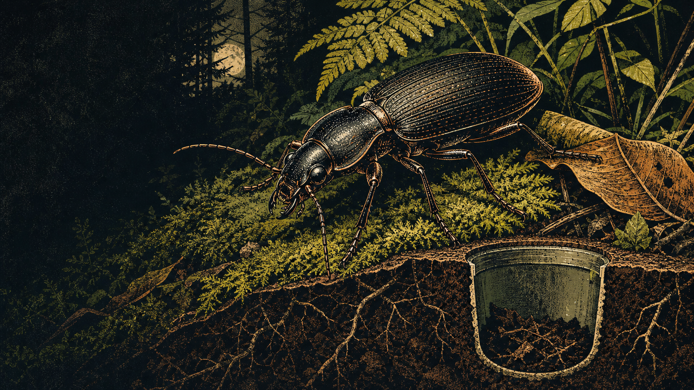

NEON Ground Beetle Tracker · unofficial
What movesat ground level?
Explore the ground beetles NEON pitfall traps encountered, site by site and season by season.

NEON Ground Beetle Tracker · unofficial
Explore the ground beetles NEON pitfall traps encountered, site by site and season by season.
